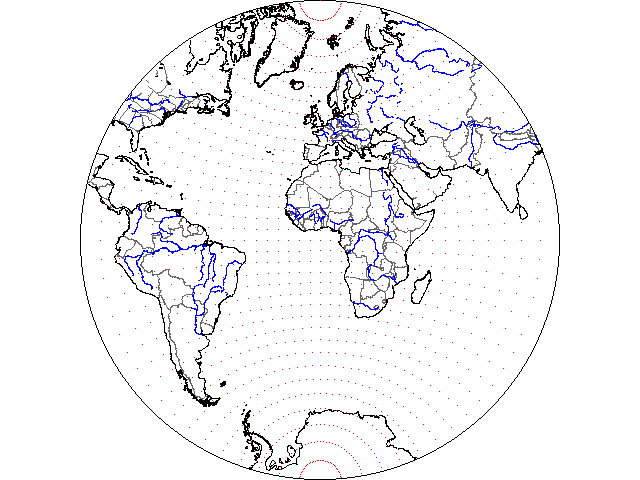
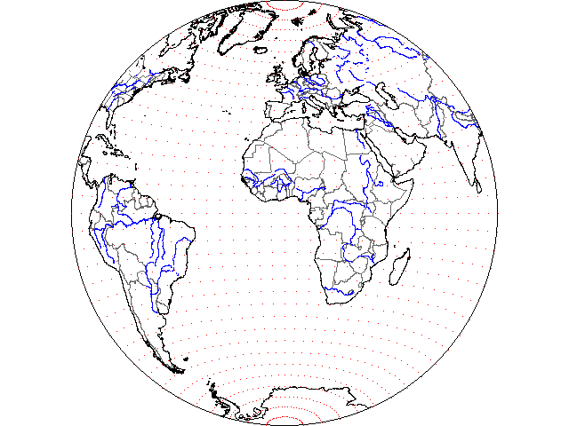
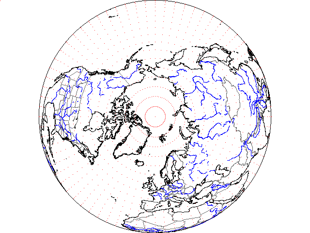
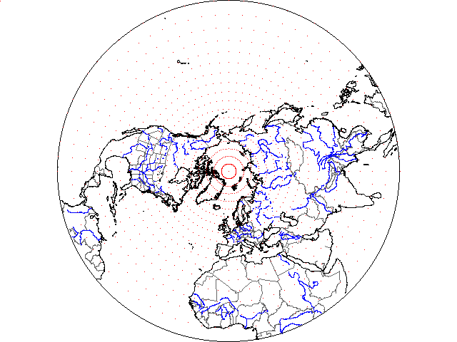
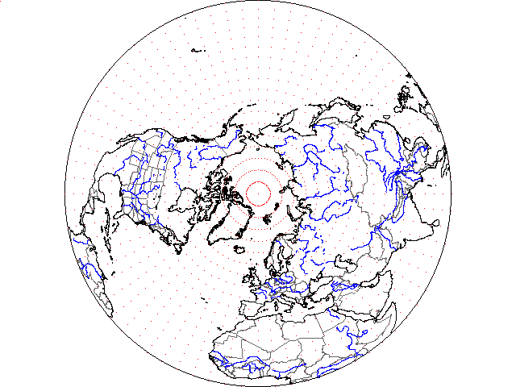
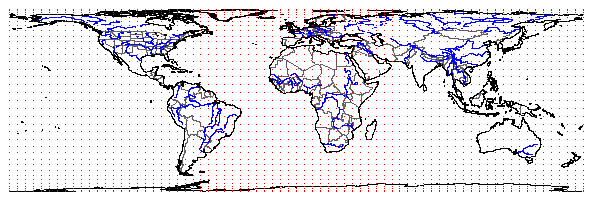
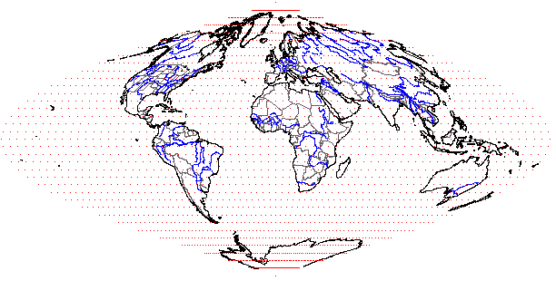
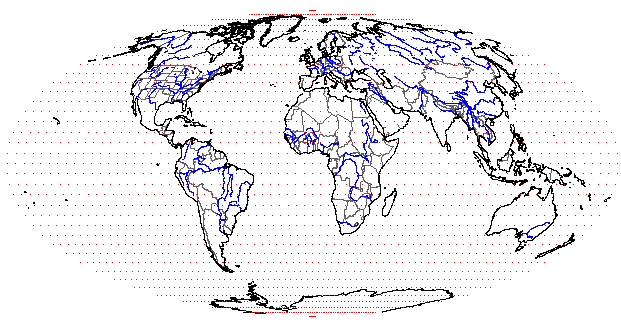
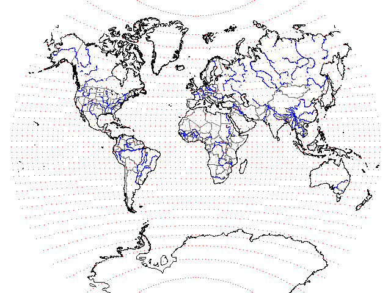
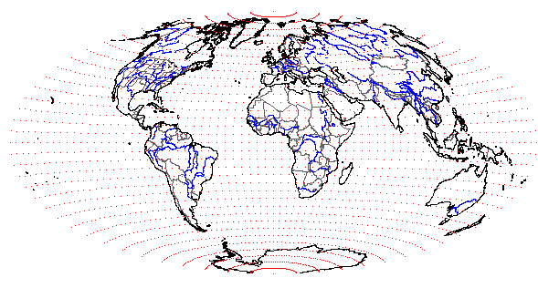

|
Orthographic (equatorial aspect)
- Project perpendicular to plane
- Known to Egyptians and Greeks 2000 years ago
- Severe distortion at edges
- Looks like globe
|
 |
Stereographic (equatorial aspect)
- Conformal
- Projected from point at center on
"back" of the globe
- 2d century BC
|
 |
Lambert Azimuthal Equal Area (equatorial aspect)
|
| |
|
 |
Orthographic (polar aspect)
- Project perpendicular to plane
- Known to Egyptians and Greeks 2000 years ago
- Severe distortion at edges
- Looks like globe
|
 |
Stereographic (polar aspect)
- Conformal
- Projected from point at center on
"back" of the globe
- 2d century BC
|
 |
Lambert Azimuthal Equal Area (polar aspect)
|
| |
|
 |
Equidistant Cylindrical
- Simplest and oldest
- dates 200 BC or 100 AD
- Also called equirectangular projection, equidirectional
projection, geographic projection, plate carrée or carte
parallelogrammatique projection
- In ArcGIS this is the GCS projection
- Other than as a quick and dirty map of the world, this has no
redeeming geometrical characteristics, and should never be used for
large scale maps.
|
 |
Mercator Ellipsoidal
- Based on cylinder
- Conformal
- Straight rhumb lines, parallels, and meridians
- Poles at infinity
- 1569
|

|
Cylindrical Equal Area
- Parallel spacing decreases toward poles, by
Cos(Lat)
- Shows poles (but distorted)
- Lambert, 1772
Lambert's latitude of no distortion was the equator. Others
have suggested different latitudes (the "central latitude"
of the projection):
- Gall, 45º
- Behrmann, 30º
- Edwards, about 37º
- Peters, about 45-47º
Lambert's version is above, the Gall-Peters below. To keep areas
equal, note the stretching in one direction compensated by equivalent
compression in the other direction.
|
 |
UTM (Universal Transverse Mercator)
- This is a projection for Zone 18, and normally would be zoomed
in to show a much smaller area.
- The central meridian is zone 18 runs north south, and the others
converge--to the east on the left side of the map, and to the west
on the right.
|
| |
|
 |
Lambert Conformal Conic
- Based on cone
- Straight meridians, curved parallels
- Very close to also being equal area for a region like the
continental US
|
 |
Albers Equal Area
- Based on cone
- Straight meridians, curved parallels
- Very close to also being conformal for a region like the
continental US
|
| |
|
 |
Sinusoidal
- Pseudocylincrical
- Equal area
- since mid 16th century
|
 |
Molleweide
|
 |
Van Der Grinten
- Entire globe inside a circle
- All meridians and parallels are arcs of circles
(except equator and central meridian, which are
straight lines or infinite circles)
- 1904
|
 |
Hammer
- Modified Lambert Azimuthal Equal Area (halve
vertical coordinates, and show more meridians to
have entire globe visible)
- Remains equal area
- 1892
|